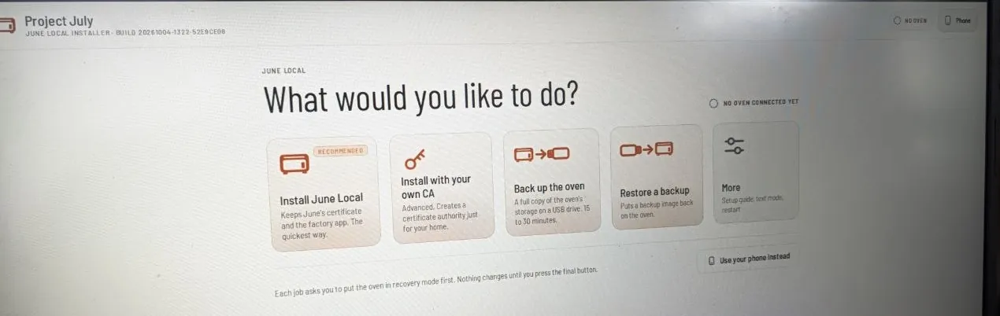
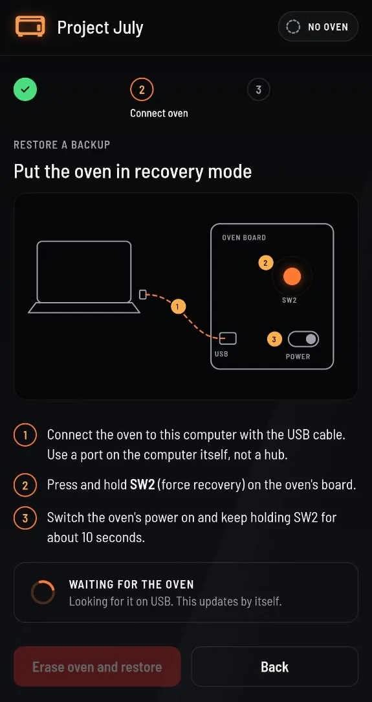
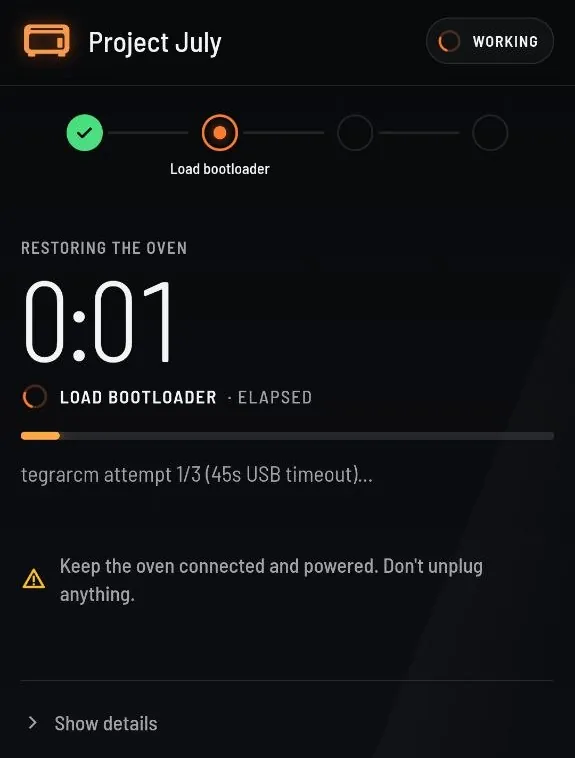
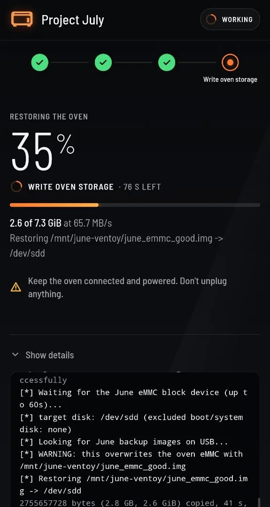
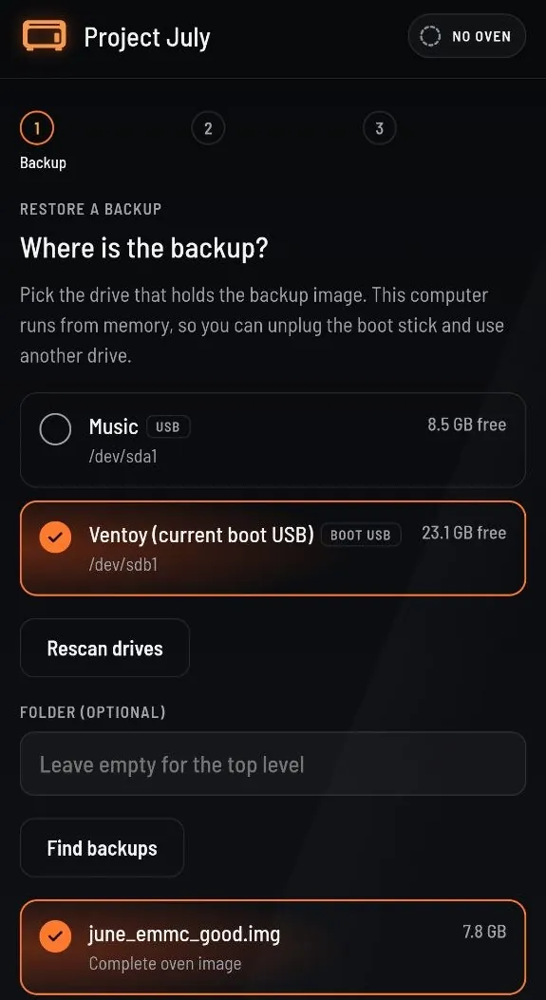
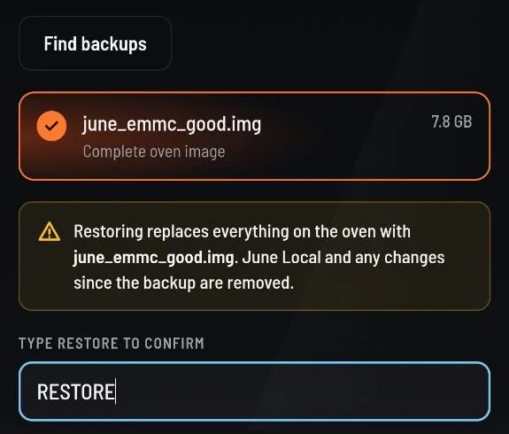
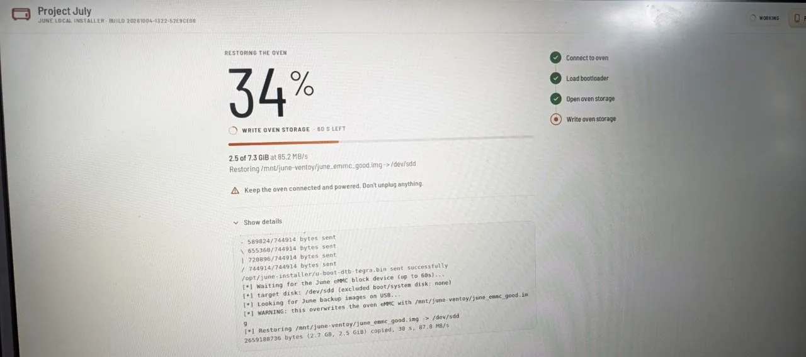
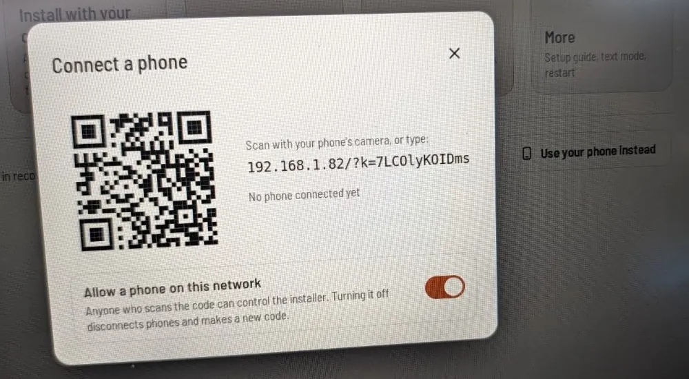

Installer guide
Make the USB stick and run the installer
The installer runs on a laptop, started from a USB stick. This page shows how to make that stick with Ventoy, and what each screen of the installer looks like.
Opening the oven and finding SW2 is covered in the 3D setup walkthrough.
Early access · version 0.5 Not for everyone yet
Project July is in early access. We're reviewing feedback from the first testers and fixing what they find. If you're less comfortable with technical steps, please hold off until more people have tested it.
Whoever you are, make a backup first. It takes 15 to 30 minutes, and the installer can restore the oven from it if anything goes wrong. How to back up and restore
Installing Ventoy erases the USB stick
Everything on the stick is deleted. Copy off anything you want to keep, and check twice that you've picked the stick and not another drive.
The installer rewrites the oven's storage
Installing or restoring writes to the oven's built-in storage (its eMMC). Make a backup first so you can always put the oven back the way it was.
Step 1
Download and verify
You need two downloads:
- Ventoy, a free tool that turns a USB stick into a boot menu. Get it from the official site, ventoy.net.
- The installer image,
june-local-live.iso(about 1.1 GB). It will be linked under Downloads once testing is complete.
Before you use the image, check that it's exactly the file we published. Work out its SHA-256 checksum and compare it with the one shown here. If they differ, download it again.
Windows (PowerShell)
Get-FileHash .\june-local-live.iso -Algorithm SHA256Linux
sha256sum june-local-live.isoCurrent build
- File
june-local-live.iso- Build
20261005-0159-d8748b01- Date
- 5 October 2026
- SHA-256
9c74943fa2acf4f62ca1f0c0ebd66803c21ac7bce7d87fe0bfb15ad419bed76f
The checksum changes with every build. Always compare against this page, not a copy someone sent you.
Step 2
Put Ventoy on the stick
Use a stick of at least 32 GB. Pick 64 GB if you want the oven backup on the same stick. USB 3 makes the backup much faster.
On Windows
- Unzip the Ventoy download and run
Ventoy2Disk.exeas Administrator. - Pick your USB stick under Device. Check the name and size twice. Leave Show all devices off.
- Open Option › Partition Style and choose MBR.
- If the laptop uses Secure Boot, turn on Option › Secure Boot Support.
- Click Install and confirm both warnings. This erases the stick.
On Linux
- Install the tools Ventoy needs (Debian and Ubuntu shown):
sudo apt install dosfstools exfatprogs- Unpack the Ventoy download and find your stick. Use the whole disk, like
/dev/sdX, never a partition like/dev/sdX1:
lsblk -o NAME,SIZE,MODEL,TRAN,MOUNTPOINTS- Install Ventoy. This erases the stick. Add
-sfor Secure Boot support.
sudo sh Ventoy2Disk.sh -i /dev/sdXThe finished stick
Ventoy splits the stick into two parts. Leave the small one alone. The large one is where everything for Project July goes, and the installer finds it by its name, Ventoy.
- Keep the name “Ventoy”. The installer looks for it to save logs, certificates and backups.
- exFAT or NTFS, never FAT32. An oven backup is one file of about 7.3 GB, and FAT32 can't hold files over 4 GB. Ventoy's default, exFAT, is right.
- Leave about 8 GB free if the backup will go on this stick.
Step 3
Copy the installer and settings
- Open the large Ventoy drive and copy
june-local-live.isoto the top level, not into a folder. - Make a folder called
ventoythere, and in it a text file calledventoy.jsonwith this in it:
{
"control": [
{ "VTOY_DEFAULT_MENU_MODE": "0" },
{ "VTOY_FILT_DOT_UNDERSCORE_FILE": "1" },
{ "VTOY_MENU_TIMEOUT": "3" },
{ "VTOY_DEFAULT_IMAGE": "/june-local-live.iso" }
]
}This makes Ventoy start the installer by itself after 3 seconds, and hides the hidden files a Mac leaves behind. It's optional: without it, you pick the image from Ventoy's menu yourself.
- Eject the stick safely before you unplug it.
june-local-live.isothe installerventoy/ventoy.jsonstart it by itself
june-logs/added by the installer: a log of every jobjune-certs/added by “Install with your own CA”june-backups/oven backups, if you save them here
The last three appear once you've used the installer.
Step 4
Start the laptop from the stick
Use the laptop that will run the installer, not the oven. Its own system and files are left alone: take the stick out and restart to go back to normal.
Open the boot menu
Plug the stick in, switch the laptop on and press its boot-menu key straight away. It's often F12, F11, F9, F2 or Esc, and usually shown briefly on screen. Pick the USB stick. If it's listed twice, pick the one marked UEFI. On an Intel Mac, hold Option while it starts. Macs with Apple chips (M1 and later) can't start from this stick.
Get past Secure Boot, if it stops you
Many laptops have Secure Boot switched on. If you see a blue Verification failed or MokManager screen the first time, do one of these:
- Enroll Ventoy's key (needs Secure Boot Support from step 2): choose Enroll key from disk, open
VTOYEFI, pickENROLL_THIS_KEY_IN_MOKMANAGER.cer, then Continue, Yes and Reboot. You only do this once per laptop. - Or switch Secure Boot off in the laptop's firmware settings (BIOS/UEFI) and start again. You can switch it back on afterwards.
- Enroll Ventoy's key (needs Secure Boot Support from step 2): choose Enroll key from disk, open
Two menus, one after the other
First Ventoy's menu, which starts
june-local-live.isoafter 3 seconds. Then the June Local menu, which starts the graphical installer after a few seconds. Both are expected; you don't need to press anything. Choose text mode only if the graphical installer won't start.
The installer copies itself into the laptop's memory as it starts, so once it's running the stick can come out. That's useful if you want to save the backup to a different drive.
The installer
What would you like to do?
This is the first screen. Every job asks you to put the oven in recovery mode first, and nothing on the oven changes until you press the final button.

| Tile | What it does |
|---|---|
| Install June Local | Recommended. Keeps June's certificate and the factory app, so the oven's own app works as before, but talks to the local server on the oven instead of June's cloud. About two minutes. |
| Install with your own CA | Advanced. Creates a certificate authority just for your home and signs a certificate for the oven's address. |
| Back up the oven | A full copy of the oven's storage on a USB drive. 15 to 30 minutes. |
| Restore a backup | Puts a backup back on the oven, replacing everything on it. |
| More | Setup guide, text mode and restart. On a phone this tile is Phone setup. |
Every job
Put the oven in recovery mode
After you pick a job and its options, the installer shows this screen. These are its steps:
- Connect the oven to the laptop with the micro-USB cable. Use a port on the laptop itself, not a hub.
- Press and hold SW2 (force recovery) on the oven's board.
- Switch the oven's power on and keep holding SW2 for about 10 seconds.
Waiting for the oven updates by itself. When it says the oven is found, let go of SW2 and press the job's button: Install June Local, Start backup or Erase oven and restore.
The oven's fans spin up and stay loud while it works. That's normal.
Mains power
Once the oven is plugged in, parts inside carry mains power. Touch only SW2 and the micro-USB cable. Where SW2 is

Job
Install June Local
Choose Install June Local
Leave Keep the no-pin patch after a factory reset off, as it starts, unless you know you need it. Press Next: connect the oven.
Put the oven in recovery mode
As above, then press Install June Local.
Wait for “June Local is installed”
About two minutes. The tracker at the top shows which stage it's on. Keep the oven connected and powered, and don't unplug anything until you see the success screen.
Restart the oven and check it
Unplug the oven's power and the USB cable. Wait 10 seconds, plug the power back in and let the oven start normally. From a phone or computer on the same network, open
http://<oven-ip>/localto see the June Local status page. Pair from the app or Home Assistant, and close the oven up only once that works.
Install with your own CA
For a certificate authority of your own instead of June's certificate. Enter the oven's address on your network (for example 192.168.1.50, reserved for the oven in your router) and a name such as june.local. The installer creates the CA, signs a certificate for that address and saves both in june-certs/ on the stick. After the install, put the CA on your phone (on Android: Settings › Security › Install a certificate › CA certificate) and pair using the oven's address.


Jobs
Back up and restore
A backup is a complete copy of the oven's storage: one file of about 7.3 GB (7.8 GB as most computers count it). Make one before you install anything.
Back up the oven
- Choose Back up the oven, then the drive. The stick you started from is listed as Ventoy (current boot USB) if it has room.
- Keep the folder (
june-backups) and file name it suggests, or change them. Press Next: connect the oven. - Put the oven in recovery mode and press Start backup. It takes 15 to 30 minutes.
- The installer saves the
.imgfile with a.sha256checksum next to it. Unplug the drive safely, then the oven's power and USB cable.
Not enough room on the stick?
The installer runs from the laptop's memory, so you can pull the Ventoy stick out once it's running and plug in a second drive. Press Rescan drives and pick it. Use exFAT, NTFS or ext4 with at least 8 GB free.
Restore a backup
- Choose Restore a backup, pick the drive and press Find backups. Select the image.
- Read the warning and type RESTORE to confirm. Restoring removes June Local and anything that changed since the backup.
- Put the oven in recovery mode and press Erase oven and restore. Don't unplug the oven until it's finished.



Optional
Use your phone
You can follow and run every job from a phone, handy when the laptop is on the kitchen counter and you're crouched by the oven. Press Use your phone instead or Phone at the top, and scan the code.
- The phone must be on the same network as the laptop.
- Anyone who scans the code can control the installer. Switch Allow a phone on this network off when you're done; that disconnects phones and makes a new code.
- After a custom install, the phone can download the CA from here.
Text mode
If the graphical installer won't start, choose text mode (basic UI) in the June Local menu. It does the same jobs and writes the same logs:
1) Install June Local
2) Install with your own CA
3) Back up the oven
4) Restore a backup
5) Exit installer and reboot
Help
If something goes wrong
A failed job shows the reason with Try again and Back to start. Every job also writes a log to june-logs/ on the Ventoy stick; include it if you ask for help.
| What you see | What to do |
|---|---|
| Ventoy doesn't list the image | Put it on the large Ventoy drive, not VTOYEFI. Check it ends in .iso, then plug the stick in again. |
| Verification failed, or MokManager | Secure Boot. Enroll Ventoy's key or switch Secure Boot off. |
| “No bootable device” | Check the boot order, and try the other USB entry (UEFI or Legacy). |
| mkfs.vfat: command not found | On Linux, install dosfstools and exfatprogs and run Ventoy2Disk.sh again. |
| The graphical installer falls back to text | Images built before 5 October 2026 could fail to start it. Copy the current image onto the stick, or use text mode. |
| “Waiting for the oven” never changes | Plug the cable into the laptop itself, not a hub, and check it carries data. Hold SW2 while switching the power on, and keep holding for 10 seconds. |
| The stick isn't offered for the backup | Keep the name Ventoy, use exFAT or NTFS (not FAT32) and leave 8 GB free. Or use a second drive. |
| A job stops part-way | Don't unplug the oven. Press Try again. If it fails again, save june-logs/ and get in touch. |
Do
- Use a USB 3 port on the laptop itself
- Keep the oven powered and connected for the whole job
- Wait for the success screen before unplugging
- Test the oven before closing it up
Don't
- Unplug the oven during an install or restore
- Use FAT32 for the backup drive
- Rename the Ventoy drive
- Worry about the fans: running fast is normal
For the curious
What's inside
The installer image is a small Debian 12 system that runs entirely from the laptop's memory. It puts two programs on the oven, both written in Go and built for the oven's processor.
june-local
The local server that replaces June's cloud on your network. It answers the oven and the app the way June's servers did.
june-camerad
The camera bridge. It takes pictures from the oven's own camera service, without opening the camera itself, and streams them to the app and Home Assistant.
The source code for both will be published on GitHub alongside the installer.